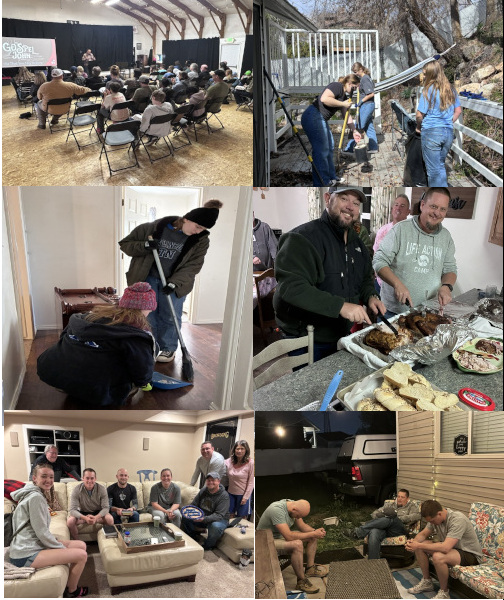

Church Planting in Utah
The Sutton family serves as our primary missionary partners on the ground in Utah—one of the least evangelical states in the country. From supporting local works like Redemption Bear River in Tremonton to organizing community group outreaches in Syracuse, Living Waters stands directly with them through prayer, short-term team deployments, and financial funding.

Meet the Sutton Family
Andrew and Rachael have been married since 2001 and are blessed with four beautiful daughters and a wonderful son-in-law. Rachael is an experienced educator with 18 years in teaching, while Andrew served bi-vocationally as a home builder and pastor. Passionate about both domestic and international missions, their faith was deeply shaped while serving together as missionaries in Uganda, Africa. Today, they are focused on local mission work—with a heart to follow God’s lead and share His love through relationship, service, and compassion.

Church Planting in Utah
Building Relationships. Making Disciples. Establishing Churches.
The Sutton family serves in Utah with a passion for sharing the Gospel and helping establish healthy, Christ-centered churches. Through discipleship, community outreach, and personal relationships, they are committed to reaching individuals and families with the hope of Christ.
Church planting is more than starting a new congregation; it is investing in people, building relationships, and helping communities grow in faith. Through ongoing ministry efforts, the Suttons seek to strengthen believers, support new disciples, and help develop lasting churches that impact future generations.
- Gospel Outreach
- Discipleship
- Community Engagement
- Leadership Development
- Church Planting Partnership
Latest Missionary Update

October 2026 Newsletter
Read the latest ministry updates, church planting progress, prayer requests, and outreach opportunities from the Sutton family.
📄 View October Newsletter (PDF)Praises & Prayer Requests
- Pray for Andrew as he travels back east to touch base with supporters and create new support connections for Redemption Lakeside.
- Continue praying for the Paulk family.
- Continue to pray that we are able to find a meeting place for Redemption Lakeside, as well as the financial support to sustain it.
- Continue praying for the Syracuse community group.
- Praise for the mission team from Crossroads Fellowship in Cadiz, KY.
Join Our Support Team
Partner with the Suttons to bring the message of the Gospel to the Utah Valley.
Give (Select "Suttons on Mission") Connect with the SuttonsPast Newsletters
Browse previous ministry newsletters and prayer updates.


📞 Phone: (931) 216-6625
📸 Socials: @suttonsonmission